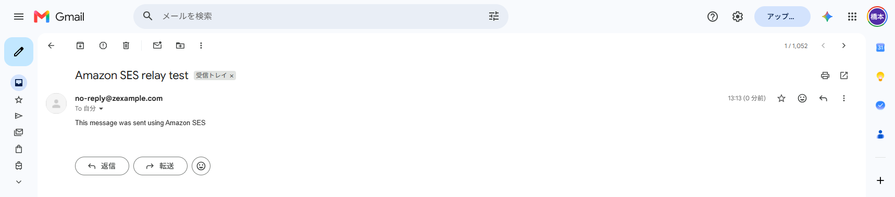
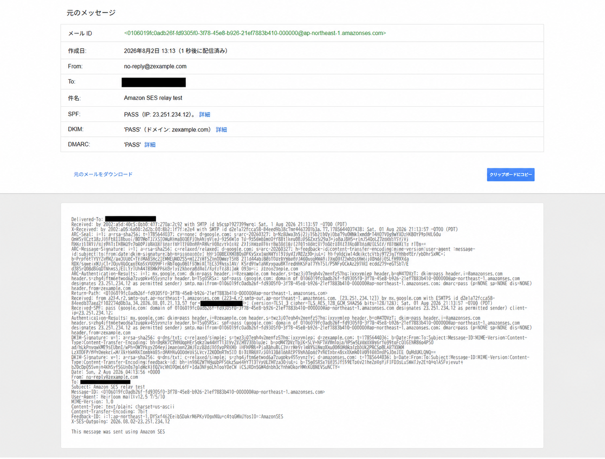
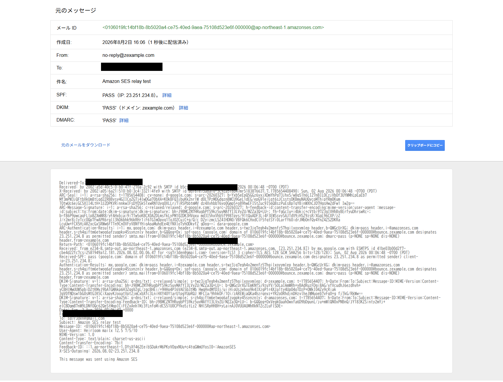

Amazon SES SMTPリレー
Amazon SESの送信ドメインを作成し、Amazon Linux上のPostfixからSES SMTPへメールをリレーする手順をまとめる
カスタムMAIL FROMを設定し、SPF、DKIM、DMARC、Return-Pathを確認する
Amazon SES作成
- Amazon SESコンソールの
ID＞IDの作成を選択 - IDタイプは
ドメインを選択し、送信元として使用するドメインを入力 - Easy DKIMを選択し、DKIM署名を有効化
DNSレコードのRoute 53への発行を有効にしてIDを作成- IDステータスが
検証済みになることを確認
DNSレコードのRoute 53への発行を有効にすると、SESがEasy DKIM用のCNAMEレコードを3件自動作成する
外部DNSを利用する場合、または自動発行を無効にした場合だけ、SESが提示する3件のCNAMEレコードを手動登録する
IAM SMTP認証情報
PostfixからSES SMTPエンドポイントへ接続するため、IAM SMTP認証情報を作成する
Mail Manager SMTPは、Secrets Managerによるローテーションやトラフィックポリシーを含む別機能であり、このリレー手順では使用しない
- Amazon SESコンソールの
SMTP設定を選択 IAM SMTP認証情報＞IAM認証情報を作成するを選択- 用途を識別できるIAMユーザー名を入力
例:ses-smtp-user - ユーザーを作成し、生成されたSMTPユーザー名とSMTPパスワードを保存
ウィザードで作成したSMTP用IAMユーザーはAWSSESSendingGroupDoNotRenameへ追加される
このグループはSESがSMTP送信用権限を割り当てるために作成するため、名前を変更しない
SMTPパスワードは作成時だけ確認できる
SMTPユーザー名はアクセスキーIDのようにAKIAから始まる形式だが、組み合わせる値はIAMのシークレットアクセスキーではなく、SESが生成したSMTPパスワード
出典：Obtaining Amazon SES SMTP credentials
PostfixからSES SMTPへリレー
1. 必要なパッケージを導入
Postfix、SMTP AUTHに必要なSASL認証パッケージ、送信テスト用のmailxを導入
dnf install -y postfix cyrus-sasl-plain mailx2. 変更前の状態を記録
systemctl statusで稼働状態、postconf -nで初期値から変更されたPostfix設定、postqueue -pで滞留メールを確認
systemctl status postfix --no-pager
postconf -n
postqueue -p3. main.cfをバックアップ
変更対象のmain.cfだけを退避し、作成結果を確認
cp -pi /etc/postfix/main.cf /etc/postfix/main.cf.`date +%Y%m%d`
ls -la /etc/postfix/main.cf*4. ホスト名を確認
OSが認識するFQDNとPostfixのmyhostnameを確認する
両方がメールリレーサーバーとして使用するFQDNで一致している場合、myhostnameの明示設定は不要
hostname -f
postconf myhostname5. main.cfを編集
東京リージョンのSES SMTPエンドポイントをリレー先に設定する
vi /etc/postfix/main.cfrelayhost = [email-smtp.ap-northeast-1.amazonaws.com]:587
smtp_sasl_auth_enable = yes
smtp_sasl_security_options = noanonymous
smtp_sasl_password_maps = hash:/etc/postfix/sasl_passwd
smtp_use_tls = yes
smtp_tls_security_level = secure
smtp_tls_note_starttls_offer = yes
smtp_tls_CAfile = /etc/pki/tls/certs/ca-bundle.crtOSのホスト名がFQDNではない場合、EC2の内部ホスト名ではなくメールリレー用FQDNを使用する場合、OSのホスト名を変更せずPostfixだけ別名で動作させる場合はmyhostnameを明示するmyhostnameはPostfixのSMTPクライアントが送信するHELO / EHLO名などの既定値として使用される
myhostname = <POSTFIX_FQDN><POSTFIX_FQDN>にはses-relay.example.comのような実際のFQDNを指定する
この値はPostfix自身の識別名であり、Amazon SESで検証する送信元メールアドレスやドメインとは別に扱う
出典：Postfix Configuration Parameters: myhostname
Amazon Linuxの初期設定にsmtp_tls_security_level = mayがある状態でsecureを追記すると、次の警告が発生する
postfix: warning: /etc/postfix/main.cf, line 755: overriding earlier entry: smtp_tls_security_level=may既存のmayを削除またはコメントアウトし、secureを1行だけ残す
後続のpostfix checkが無出力になることを確認
6. SMTP認証情報を設定
sasl_passwdを作成し、SES SMTPエンドポイント、SMTPユーザー名、SMTPパスワードを1行で記載
vi /etc/postfix/sasl_passwd[email-smtp.ap-northeast-1.amazonaws.com]:587 <SES_SMTP_USER_NAME>:<SES_SMTP_PASSWORD><SES_SMTP_USER_NAME>をSES SMTPユーザー名、<SES_SMTP_PASSWORD>をSES SMTPパスワードへ置き換える
山括弧は記載しない
SMTPパスワードはAWSのシークレットアクセスキーとは異なる
7. 認証情報DBと権限を設定
postmapでPostfixが参照するハッシュDBを生成し、平文ファイルとDBをrootだけが読み書きできる状態へ変更
postmap hash:/etc/postfix/sasl_passwd
chown root:root /etc/postfix/sasl_passwd /etc/postfix/sasl_passwd.db
chmod 0600 /etc/postfix/sasl_passwd /etc/postfix/sasl_passwd.db
ls -la /etc/postfix/sasl_passwd*8. CA証明書を確認
postconfでPostfixが参照するCAバンドル、grepで設定行、test -rでファイルの読み取り可否を確認
postconf smtp_tls_CAfile
grep -n '^smtp_tls_CAfile' /etc/postfix/main.cf
test -r /etc/pki/tls/certs/ca-bundle.crt && echo "CA bundle: OK"9. 設定を検証
postfix checkは設定構文と権限を検査する
正常時は何も表示されない
続けて有効値を確認する
postfix check
postconf relayhost smtp_sasl_auth_enable smtp_sasl_security_options \
smtp_sasl_password_maps smtp_use_tls smtp_tls_security_level \
smtp_tls_note_starttls_offer smtp_tls_CAfile10. Postfixを再起動
systemctl restart postfix
systemctl status postfix --no-pager出典：Integrating Amazon SES with Postfix
送信テスト
本番アクセスが付与されたSESアカウントでは、検証済みドメインの送信元から通常の宛先へ送信できる
サンドボックスでは宛先も検証済みであることが必要
1. 実際のメールアドレスへ送信
<SENDER_EMAIL>をAmazon SESで検証済みの送信元メールアドレス、<RECIPIENT_EMAIL>を送信先メールアドレスへ置き換える
echo "This message was sent using Amazon SES" | mailx -v -r <SENDER_EMAIL> -s "Amazon SES relay test" <RECIPIENT_EMAIL>2. SESメールボックスシミュレーターへ送信
success@simulator.amazonses.comは正常配信を模擬する宛先
メールボックスで受信するのではなく、Postfixログのstatus=sentとSESメトリクスで結果を確認する
echo "This message was sent using Amazon SES" | mailx -v -r <SENDER_EMAIL> -s "Amazon SES relay test" success@simulator.amazonses.com送信後の確認
1. Postfixログとキューを確認
journalctl -u postfix --since "10 minutes ago" --no-pager
postqueue -pログのrelay=email-smtp.ap-northeast-1.amazonaws.com、dsn=2.0.0、status=sent、SESの応答250 Okを確認するMail queue is emptyは滞留メールがない状態
Gmail宛てとSESシミュレーター宛ての元メールは、どちらもstatus=sent (250 Ok ...)で正常にSESへ引き渡された
その後のfrom=<>と501 Invalid MAIL FROM address providedは、mailxが要求した配送状況通知をPostfixが生成し、空のエンベロープ送信者でSESへ再送しようとして拒否された記録
元メールの成否とは分けて確認する
2. Gmailで受信結果を確認

3. メールソースを確認
Gmailのメッセージのソースを表示で、SPF、DKIM、DMARCがPASSであること、受信IPがAmazon SESの送信基盤であることを確認

カスタムMAIL FROM設定
カスタムMAIL FROMを設定すると、受信者に表示されるFromアドレスは変えずに、Return-PathとエンベロープMAIL FROMを自ドメイン配下へ変更できる
SPFのドメインをHeader Fromと同じ組織ドメインへ揃えられるため、DMARCのSPFアライメントを成立させやすくなる
| 項目 | 未設定 | 設定後 |
|---|---|---|
| 表示上のFrom | <SENDER_EMAIL> | 通常は変わらない |
| Return-Path | Amazon SES管理ドメイン | <MAIL_FROM_DOMAIN> |
| SPFアライメント | Header Fromと一致しない場合がある | 同一組織ドメインへ整合可能 |
カスタムMAIL FROMは認証整合性とブランド一貫性を高めるが、受信トレイへの到達を保証しない
到達性は送信レピュテーション、バウンス率、苦情率、コンテンツ、送信量などにも左右される
カスタムMAIL FROMのMXレコードをSESが確認できない場合に、送信を止めるか、SES管理ドメインへ切り替えて継続するかを選択する
| 確認項目 | メッセージを拒否 | デフォルトのMAIL FROMを使用 |
|---|---|---|
| MXレコードが正常 | <MAIL_FROM_DOMAIN>を使用して送信 | <MAIL_FROM_DOMAIN>を使用して送信 |
| 未検証・設定不備 | SESが送信を拒否 | SES管理のamazonses.comドメインへ切り替えて送信 |
| 受信者に表示されるFrom | <SENDER_EMAIL> | <SENDER_EMAIL>のまま |
| Return-Path | 送信されない | amazonses.com配下へ切り替わる |
| 重視するもの | 認証設定の一貫性 | メール送信の継続性 |
- Amazon SESコンソールで対象IDを開く
カスタムMAIL FROMドメイン＞編集を選択- MAIL FROM用サブドメインを入力
例:bounce.example.com - MX障害時の動作を選択して保存
DNSレコード登録
カスタムMAIL FROMで使用するMXレコードとSPF用TXTレコードを、Route 53の対象ホストゾーンへ登録する
Amazon SESのDNSレコードのRoute 53への発行を利用した場合は自動登録されるため、同じレコードを重複して作成しない
1. 登録するレコード
<MAIL_FROM_SUBDOMAIN>にはbounceのようなMAIL FROM用サブドメインを指定する
東京リージョンでは、次の2レコードを同じ名前で登録する
| レコード名 | タイプ | 値 | TTL |
|---|---|---|---|
<MAIL_FROM_SUBDOMAIN> |
MX | 10 feedback-smtp.ap-northeast-1.amazonses.com |
300 |
<MAIL_FROM_SUBDOMAIN> |
TXT | "v=spf1 include:amazonses.com ~all" |
300 |
カスタムMAIL FROM用サブドメインには、Amazon SESが提示するMXレコードを1件だけ登録する
同じサブドメインへ複数のMXレコードを登録すると、カスタムMAIL FROMの設定に失敗する
2. Route 53へ登録
- Route 53コンソールで
ホストゾーンを開き、送信ドメインのホストゾーンを選択 レコードを作成を選択- レコード名へ
<MAIL_FROM_SUBDOMAIN>、レコードタイプへMXを指定 - 値へ
10 feedback-smtp.ap-northeast-1.amazonses.com、TTLへ300を指定 別のレコードを追加を選択し、同じレコード名でタイプTXTを指定- 値へ
"v=spf1 include:amazonses.com ~all"、TTLへ300を指定 レコードを作成を選択し、MXとTXTの2レコードが表示されることを確認- Amazon SESコンソールへ戻り、カスタムMAIL FROMのステータスが
成功になることを確認
送信ドメインのホストゾーンには、Easy DKIMのCNAMEレコード3件、DMARCのTXTレコード、カスタムMAIL FROMのMXレコードとSPF用TXTレコードが登録される
ホストゾーンのNSとSOA、ACM検証用CNAMEなど、Amazon SES以外で使用しているレコードは変更しない
出典：Using a custom MAIL FROM domain
DNS反映確認
dig MX <MAIL_FROM_DOMAIN> +short
dig TXT <MAIL_FROM_DOMAIN> +shortMXがリージョンのfeedback-smtpエンドポイント、TXTがv=spf1 include:amazonses.com ~allを返し、SESのMAIL FROMステータスが成功になることを確認
設定後のメールソースを確認
受信メールのソースで、Return-Pathが<MAIL_FROM_DOMAIN>配下へ変わり、SPF、DKIM、DMARCがPASSになることを確認

出典：Using a custom MAIL FROM domain
SMTPリレーの構築後は、Configuration Setを使用して配信、バウンス、苦情などのイベントを収集する
SNS、EventBridge、CloudWatch、サプレッションリスト、VDMの設定はAmazon SES 配信監視で扱う